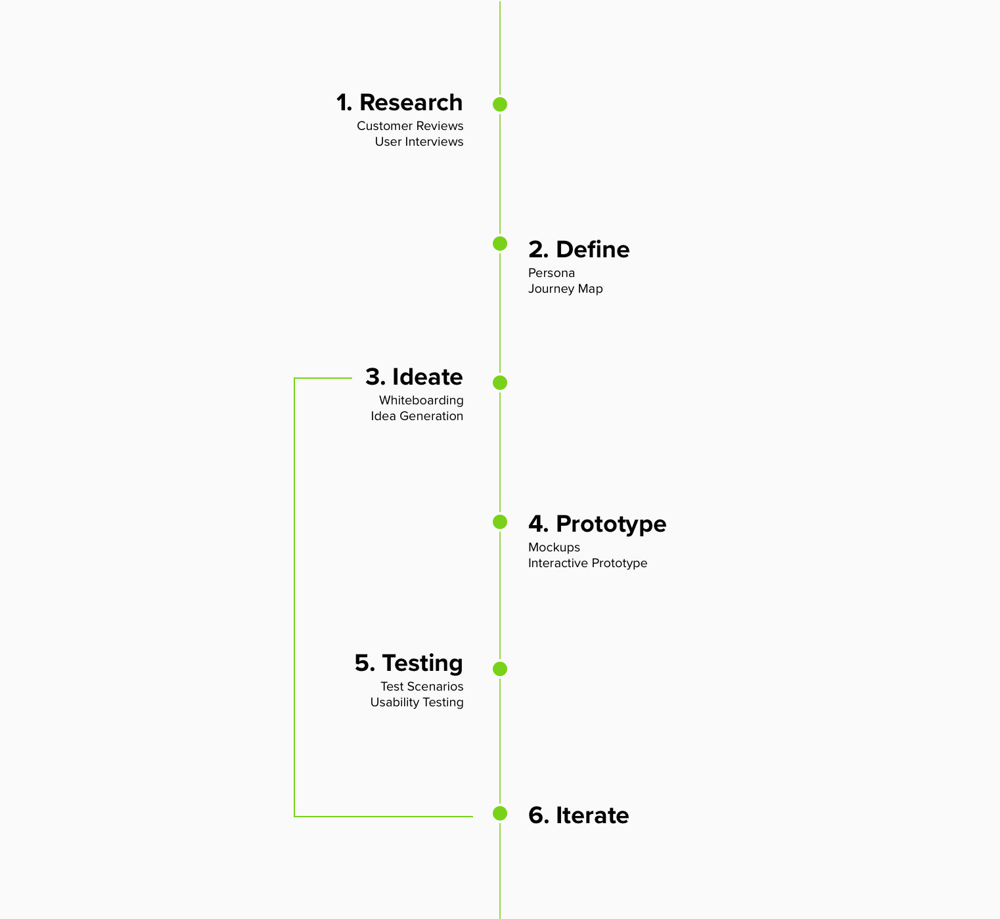
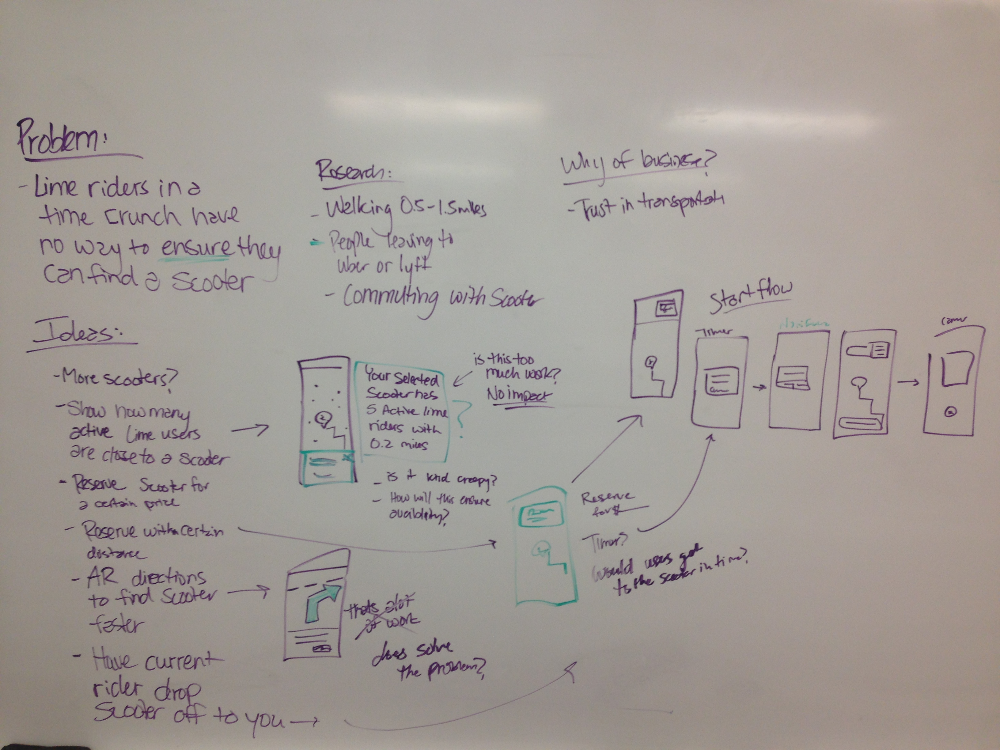
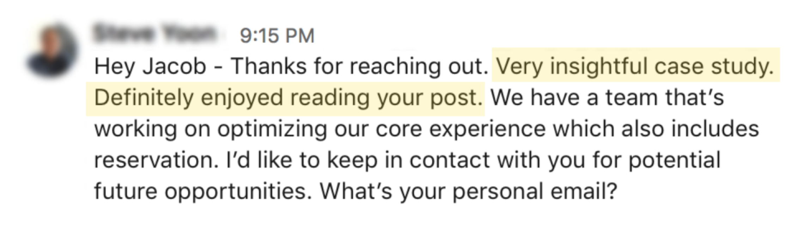

Lime App - Reservations

Project Scope:
- My Role: UX Design, Research
- Tools: Sketch, Adobe XD
- Timeline: Aug 2018 (2 Weeks)
- Deliverables: Sketches, interactive XD prototype, research findings
- Team: Just me, myself and I
The Problem
Lime riders in a time crunch have no way to ensure that they can find and rent an available scooter.
The Solution
A feature within Lime that allows riders to reserve a scooter when they are 0.5 miles from their selected scooter for a certain price.
My Process
Research
I personally have struggled with this problem while using Lime's scooter service. Before diving into any problem I always strive to find out if this problem is worth solving and then understand the problem more deeply.
To start my research I went to the app reviews for Lime to see if other customers are facing this same problem. As result, I found many customers complaining about the issue stated above. From here I wanted to learn more about the specific use cases directly from the users, so I interviewed 6 Lime riders to dig deeper. I also found a survey conducted by Lime in San Francisco that gave me more information about Lime customers.


Research Findings:
- Busy Lime riders do not feel confident that a scooter will still be at the location by the time they get there
- Lime riders walk 0.5–1.5 miles to find a scooter
- If Lime riders can’t get a scooter in time they will find a more dependable form of transportation
- In a survey conducted by Lime, results showed that 55% of riders are using scooters to commute to/from work/school
Define
Based on the research, I went through multiple revisions of different problem statements to help to me have a clear understanding of the problem to solve. After that I built a persona & journey map to refer back to throughout my process.
Problem Statement
How might Lime (the scooter company) help users in a time crunch ensure that they can find and rent an available scooter.

User Quotes:
Ideate
After understanding the users & problem deeper, I wrote down as many ideas as possible (even the crazy ones) on a whiteboard to help me think of different ways of solving the problem. Then, I clustered the ideas into similar themes and sections.
Potential feature solution: When Lime riders reach a certain distance from the scooter selected, the app will give them an option to reserve the scooter for a certain price.
Why this idea?
To me I feel like there are a few main value propositions for the business and the end customer:
- Customer trust — with the ability to guarantee an available scooter, Lime riders will trust the service as a dependable way of transportation.
- Profit maximization — through unused scooters being reserved for a price, the business will increase revenue.
- Product differentiation — through creating a more reliable form of transportation this feature will help separate Lime from other scooter competitors such as Bird or Spin.
Storyboarding

Things I considered:
- What is a fair price?
- How close is a fair distance for reserving a scooter?
- Will the reservation price still help the business make money?
- Are riders willing to pay the extra fee to reserve the scooter?
Reservations - Pricing breakdown
Currently, Lime scooters cost $1.00 to unlock and $0.15 a minute to continue riding. If the rider can reserve the scooter from 0.5 miles away then the price of the reservation depends on how long it takes for the rider to get to the scooter. If the average rider takes 15 mins to walk 0.5 to the scooter than that would cost 15 mins * $0.15 = $2.25. Therefore, a fair price for a reservation could be $3.00. That way the business would make an extra $0.75 per reservation.
Sketching
During sketching, I was able to explore potential layouts and user flows for introducing the reservation option to users. As sketched I determined that there should be two user flows in this feature 1). if a Lime user is already within 0.5 miles from the selected scooter they will automatically have the option to reserve, while in second interaction 2). the user will be notified with a pop-up when they get within the 0.5-mile radius of the scooter.

Test & Iterate
Once I explored different ideas I wanted to test this idea with Lime customers. I did some qualitative testing with a few screens to test some variations. I then mocked up screens in Sketch to built my prototype in XD. I conducted usability tests with 6 Lime customers.
Research Findings:
- Users understand why there was a required time to get to the scooter
- Users want this feature to be optional
- Users felt 15-minutes was enough time to get to the scooter
- Users want to know they have a 15 minute time limit on the reservation
Usability Issue 1:
The main usability issue that I found was that the users were concerned that they paid $3 for the reservation but were not notified that there was a time limit. To help users be aware of the time limit on the reservation feature, I added a first-time feature interaction. This would allow the user to explore the reservation feature for the first time without committing to payment.
Usability Issue 2:
Users wanted access to the “ring” button on the scooter when they are walking towards their reserved scooter. The ring or bell button makes the scooter the user is searching for ring so you can find it easily. So I incorporated the timer and ring button into the design.

Final Solution:
This new solution will give Rachel (the persona) a better experience by providing her with a more dependable way of commuting around the city. Rachel will not have to invest time and energy walking around the streets of Boston trying to find a scooter without the assurance that it will still be there when she arrives.

Persona in context
Rachel just received a group text from her friends notifying her that they are meeting up for lunch. She gets on her phone to find a Lime scooter close to her. When she selects a scooter then discovers a new reservation feature on Lime. Rachel decides to reserve the scooter because she only have an hour to get to lunch, eat and be back in the office. As she walks to the scooter, it’s ready for her just a few blocks away and she heads to lunch.
Persona in context
Rachel is now comfortable using this reservations especially when she is in a time crunch. Overall, she trusts Lime will get her to the places she needs.

Persona in context
If at any point Rachel wants to turn off this feature she can go to the setting pages and turn it off.
My Successes
After making some changes to the design based on the previous testing, I presented my prototypes to 3 Lime riders and got the following responses:
User Quotes:
After writing up the case study, I sent my work over to a senior designer at Lime and this is the reply I received:
Lessons Learned:
- Understanding the users and problem deeply in the beginning of a project can go a long way
- If you have an idea make sure you can talk about the why of the business
- I found it helpful to write down "things to consider" when deciding on a potential solution